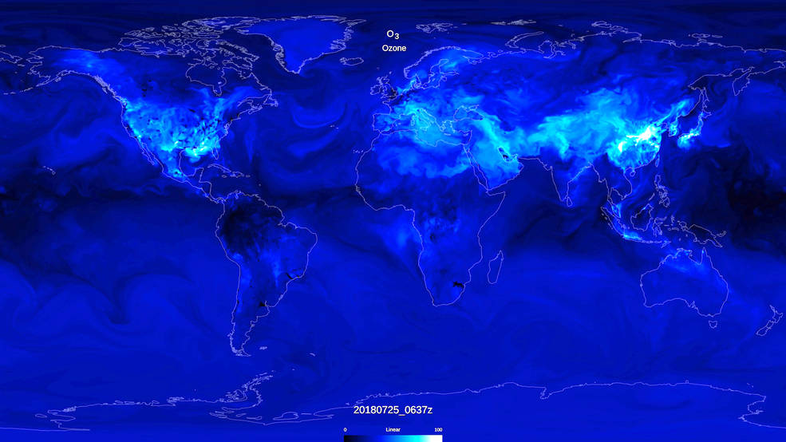

Cómo la NASA está ayudando al mundo a respirar más fácilmente
Mira alrededor. ¿Puedes ver el aire? ¿No?
Afortunadamente, muchos de los satélites de observación de la Tierra de la NASA pueden ver lo que el ojo humano no puede ver, incluidos los contaminantes potencialmente dañinos que permanecen en el aire que respiramos. Desde el punto de vista espacial, estos satélites nos ayudan a medir y rastrear la contaminación del aire a medida que se mueve por todo el mundo y han contribuido significativamente a nuestra búsqueda de aire más limpio durante décadas.
Cuando hablamos de "contaminación del aire", nos referimos a productos químicos o partículas en la atmósfera que se sabe que tienen efectos negativos en la salud humana. La Ley de Aire Limpio de 1970 estableció una legislación que requiere el seguimiento de seis de esos contaminantes: dióxido de nitrógeno (NO2), ozono a nivel del suelo, monóxido de carbono, partículas (partículas microscópicas de material sólido o líquido en el aire), dióxido de azufre y plomo. Los instrumentos de satélite están midiendo todos estos, excepto el plomo.
La NASA ha estado involucrada en el estudio de la calidad del aire durante décadas desde el espacio y con sensores terrestres, creando una serie temporal de registros de datos globales críticos para comprender los impactos y las causas de la contaminación del aire y para ayudar a diseñar soluciones. Este artículo destaca algunos de los muchos proyectos en curso ahora y planeados para los años venideros.
Medido en el espacio, usado en la Tierra
Al analizar los datos espaciales, una cosa es muy clara: reducir las emisiones de las actividades humanas puede tener un profundo efecto en la calidad del aire.
La reciente respuesta a gran escala de China a la pandemia de COVID-19, que incluyó cuarentenas y limitaciones en actividades industriales y viajes, es un ejemplo particularmente vívido de esto. Los datos de los instrumentos del Aura de la NASA y los satélites Sentinel-5 de la Agencia Espacial Europea mostraron una disminución significativa en el dióxido de nitrógeno (NO2), un gas nocivo emitido por plantas de energía, instalaciones industriales y vehículos de motor, en gran parte del país durante ese tiempo. .
La pandemia presenta un caso de uso único para las observaciones de la Tierra en el espacio; sin embargo, los datos de calidad del aire derivados de satélites tienen aplicaciones en una amplia gama de disciplinas. Ahí es donde el programa de aplicaciones de Salud y Calidad del Aire de la NASA demuestra su valor. El programa crea asociaciones invaluables con otras agencias, la industria y organizaciones sin fines de lucro para facilitar el uso de estos datos en la solución de problemas del mundo real.
"Financiamos un proyecto liderado por la Agencia de Protección Ambiental (EPA) para asimilar las observaciones de la NASA a su sistema" AirNow "", dijo el gerente del programa John Haynes.
El sistema AirNow es la plataforma de la EPA para distribuir informes y pronósticos nacionales sobre la calidad del aire en tiempo real. Las mediciones provienen principalmente de miles de estaciones de monitoreo en tierra en los Estados Unidos, México y Canadá; sin embargo, esas estaciones de monitoreo en tierra no lo abarcan todo.
"Los monitores terrestres cubren una buena parte de los EE. UU., Especialmente alrededor de las áreas metropolitanas. Pero hay grandes secciones del país que no tienen estaciones de monitoreo", dijo Haynes. "Al introducir observaciones de profundidad óptica de aerosoles satelitales desde el instrumento MODIS, también podemos medir esas áreas, lo que nos permite formar una imagen más precisa de cómo se distribuye la contaminación del aire, y específicamente las partículas finas, en todo el país y cómo cambia con el tiempo ".
Al incorporar datos del Ozone Monitoring Instrument (OMI), una contribución holandesa-finlandesa a la misión satelital Aura de la NASA, la EPA y la NASA también pudieron identificar una caída significativa en el NO2 en los últimos 15 años en los Estados Unidos, evidencia de que las reglamentaciones establecidas por la Ley de Aire Limpio hace 50 años, las reglamentaciones sobre el millaje de la gasolina del vehículo, un cambio hacia combustibles más limpios, etc., están, de hecho, funcionando.
"Hemos podido demostrar que desde 2004, los niveles de NO2 han caído hasta un 50%, dependiendo del área metropolitana de la que estemos hablando. De hecho, el aire en los Estados Unidos ahora es el más limpio en el era industrial moderna ", dijo Haynes.

Si bien el ozono en la estratosfera es fundamental para mantener la vida en la Tierra, el ozono superficial, que se muestra aquí, es un gas tóxico para la mayoría de las especies de plantas y animales. La NASA fusiona datos satelitales con modelos para proporcionar una instantánea de la química en toda la atmósfera en cualquier momento y ayudar a predecir la calidad del aire en todo el mundo.
Créditos: Centro de vuelo espacial Goddard de la NASA / Estudio de visualización científica
Conexión de los puntos (datos)
Con la abundancia de datos que ingresan, hay docenas de satélites de observación de la Tierra actualmente en órbita, uno de los mayores desafíos es conectar a las partes interesadas con las "herramientas" o conjuntos de datos adecuados para lo que están tratando de lograr, y en algunos casos, enseñándoles cómo incorporar este tipo de datos en su planificación.
"Para abordar este problema, nuestro equipo ha desarrollado un sitio web en el que ayudamos a los usuarios a navegar por todos estos recursos, desde alguien que nunca antes ha utilizado datos satelitales hasta partes interesadas más avanzadas que buscan tomar mejores decisiones e informar al público sobre cuestiones de calidad del aire ", dice Tracey Holloway, líder del Equipo de Ciencias Aplicadas de Salud y Calidad del Aire (HAQAST), financiado por la NASA, un grupo de científicos de calidad del aire y salud pública de oficinas gubernamentales y universidades de todo el país.
Los incendios forestales en California, por ejemplo, han causado problemas de calidad del aire en los últimos años. Un equipo de tigres de HAQAST pudo observar las emisiones y desarrollar nuevos métodos para utilizar los datos existentes de los instrumentos VIIRS y MODIS para apoyar al estado de California en su comprensión y cuantificación de las emisiones. HAQAST también ayudó a obtener datos de satélites más nuevos como GOES-16 en manos del estado.
Según el informe Global Burden of Disease, la contaminación del aire es la principal causa ambiental de mortalidad, una estadística de la que muchos en el sector de la salud pública son conscientes. Y la disponibilidad de observaciones satelitales está cambiando el diálogo a su alrededor.
"Justo dentro de la comunidad de la salud, hemos observado la tendencia creciente de colaboraciones de investigación que unen la experiencia entre las disciplinas de salud ambiental. A medida que continuamos capacitando a la fuerza laboral de salud global, debemos identificar los conjuntos de habilidades que pueden preparar a la fuerza laboral para gestionar los riesgos emergentes de el futuro. Por ejemplo, un conjunto de habilidades es el conocimiento y el uso de fuentes de datos innovadoras, incluidos los datos satelitales, ya sea que apliquen datos con fines de investigación o interpreten los hallazgos para actividades de divulgación educativa ", dijo Helena Chapman, gerente asociada del programa de NASA Health and Air Aplicaciones de calidad.
Holloway agrega: "La abundancia de datos satelitales en este momento es sorprendente. Solo en los últimos 10 años, ha sido notable cuántas agencias, organizaciones sin fines de lucro, ciudades y estados han pasado de no saber que los satélites podrían detectar la contaminación del aire a usar activamente los datos en sus operaciones diarias ".
Mirando hacia el futuro
En este momento, nuestros satélites pueden medir diariamente una cantidad de productos químicos en el aire en los Estados Unidos y en todo el mundo. Pero varias misiones programadas para lanzarse en los próximos años podrán hacerlo aún mejor.
Por ejemplo, la misión de Emisiones Troposféricas: Monitoreo de la Contaminación (TEMPO) está diseñada para medir varios contaminantes diferentes, incluidos NO2 y ozono, en los Estados Unidos durante cada hora del día. TEMPO les dará a los científicos la capacidad de ver cómo cambian las fuentes de contaminación y las concentraciones a lo largo del día. Parte de una constelación internacional de satélites similares que incluye el Espectrómetro de Monitoreo del Medio Ambiente Geoestacionario de Corea del Sur (GEMS) y el Sentinel-4 de la Agencia Espacial Europea, TEMPO está programado para lanzarse en 2022.
La misión Multi-Angle Imager for Aerosols (MAIA), que también se lanzará a principios de la década de 2020, mejorará nuestra comprensión de las partículas, esas pequeñas partículas microscópicas que permanecen en el aire, con un enfoque particular en grandes áreas metropolitanas. Datos como este ayudarán a la comunidad de la salud a comprender mejor la conexión entre los contaminantes en aerosol y los problemas de salud, incluidos los resultados adversos del parto y las enfermedades cardiovasculares.
"MAIA nos permitirá estudiar estos aerosoles en detalle, decirnos qué tan grandes son y cuántos de ellos están en esa categoría muy pequeña que es más dañina para la salud humana", dijo Barry Lefer, científico del programa de composición troposférica de la NASA. "También podremos comprender mejor de qué están hechas las partículas, lo que nos llevará a su origen (como el escape automático, por ejemplo)".
Aún más en el futuro, las posibilidades son muchas.
"Me encantaría ver un futuro en el que los datos de observación de la Tierra en tiempo real estén disponibles sin interrupciones y de forma continua para todos, desde la órbita hasta la palma de la mano", dijo Haynes. "Permitiría a cualquiera tomar decisiones rápidas con respecto a la calidad del aire y su salud".
Por Esprit Smith
Equipo de Noticias de Ciencias de la Tierra de la NASA
Última actualización: 14 de abril de 2020
Editora: Ellen Gray